Computer Network Chapter 5
本文最后更新于：June 4, 2022 pm
Chapter 5: Link Layer
数据链路层的职责：将数据帧通过一个链路，从一个节点传输到临近的另一个节点。
节点:主机和路由器(包括网桥和交换机)。
链路: 沿着通信路径连接相邻节点的通信信道。
- 有线链路
- 无线链路
- 局域网
链路层的特点:
- 分组传输可以经过不同的链路使用不同的协议实现即链路上可以在不同段采用不同的协议
- 每个链路协议提供不同的服务
Service
- 成帧:
- 把网络层数据报加头和尾，封装成帧。
- 帧头中包括指明目的和源的"物理地址"(不同于IP地址)。
- 链路访问:
- Medium Access Control,MAC(媒体访问控制)协议。
- 共享媒体的多路访问。
- 在邻接节点间的可靠传输
- 差错检测:
- 差错由信号衰减和噪声引起。
- 接收者检测错误：如果发现差错要求发送方重传或丢弃。
- 纠错: 接收者检测和纠正错误，不需发送者重传。
- 半双工和全双工:
- 半双工，一个节点不能同时传输和接收。
- 全双工，节点可以同时传输和接收。
- 流量控制: 在邻接的发送节点和接收节点间的同步调节
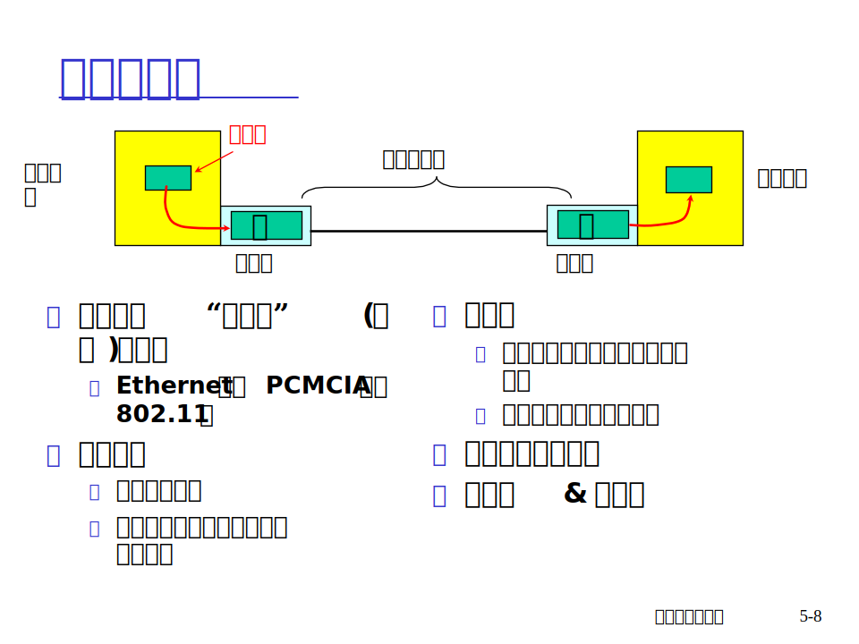
Error Detection and Correction Techniques(错误检测和纠正技术)
通过EDC位(Error Detection and Correction bits)检验，UDP校验和也是同样的思想。因此错误检测并不是100%可靠，而是存在漏掉错误的可能性，大的EDC域能提供更好的检错和纠错能力。
三种常用的检测方法:
- 奇偶校验:
- 单字节奇偶校验:
- 奇校验: 那么把每个位相加结果为奇数则校验位为0，否则为1。
- 偶校验: 那么把每个位相加结果为偶数则校验位为0，否则为1
只能检测出单个位错误，没有纠错能力。
- 二维偶数奇偶校验:
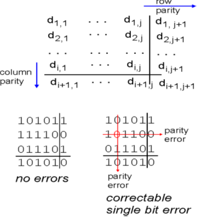
检测和纠正单个位的错误,检测任意组合的两个错误。
- 单字节奇偶校验:
- Internet校验和: 在UDP校验和计算部分有详细说明。UDP checksum
- CRC(Cyclic Redundancy Check):
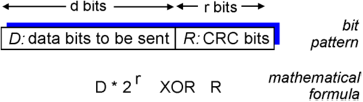- 商定多项式(r+1位)，并得到G(r+1位)。
example:
多项式: =>
多项式: => - 给D补加r位0得到d+r位作为被除数
- 计算出r位的冗余位。
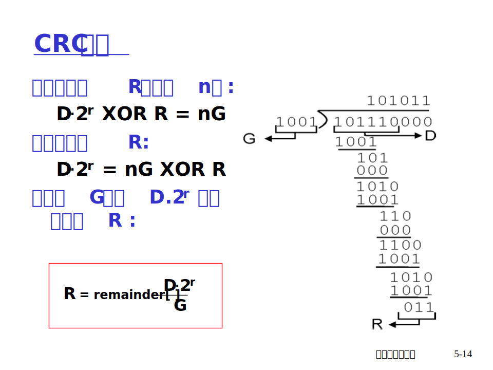
从例子来看，将D以二进制数形式作为被除数，G作为除数，当被除数与除数位数相同时，结果上1，当被除数与除数位数不同时，结果上0。最后的余数即是冗余位。
- 商定多项式(r+1位)，并得到G(r+1位)。
Multiple Access Link and Protocols(多路访问链路和协议)
链路按照使用方式不同可以大致的分为2组:
- 点对点: PPP （用于拨号访问）或HDLC
- 广播: 传统以太网以及802.11无线局域网(多路访问链路即指的是该类型链路)
对于点对点链路是单条连接使用对应的所有的链路资源，但对广播链路则是所有连接使用相同的链路资源，因此当两个或多个节点同时传输时，就会产生冲突。在某个时刻只有一个节点发送数据才可以发送成功信息。
为避免冲突来保障数据的正确传输，提出了多路访问协议。
多路访问协议:
- 分布式算法决定各节点如何共享信道，即决定节点什么时候可以传数据。
- 共享信道既要负责进行数据传输，又要负责分布式算法的控制信息的传输(即控制信息没有带外信道来传输，只能在共享信道上传输)。
理想的多路访问协议
在速率为R bps的广播信道上:
- 当一个节点有数据发送时，它能以R bps的速率发送。(独享时满载运行)
- 当有M个节点要发送数据，每个节点的平均发送速率为R/M(公平均分信道)
- 完全分散:
- 不需要主节点协调传输(分布式要求)
- 不需要时钟、时隙同步(半自主)
- 简单
多路访问协议的实现
-
信道划分:
- 时分: Time Division Multiple Access协议。
将一个周期分为不同的时隙(时隙长度通常为数据服务单元的发送时间)，每个节点分配到一个固定的时隙，节点只能在自己的时隙上发送数据。空闲时隙则被浪费。
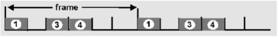 - 频分: Frequency Division Multiple Access协议。
将信道按照频率划分，每个节点分配到一个固定的频率，节点只能在自己的频率上任何时间发送数据。
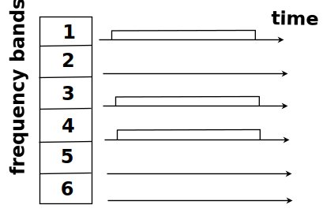 - 码分: Code Division Multiple Access协议。
每个节点分配一个唯一的编码，每个节点用它唯一的编码来对它发送的数据进行编码，节点可以在任何时间发送而不产生冲突。(编码通过正交等数学手段实现同时发送却仍然可以不冲突)
- 时分: Time Division Multiple Access协议。
-
随机访问:
当节点需要发送数据时候立马以满速率进行发送而不考虑是否会发生冲突。但要求随机访问能够检测冲突和从冲突中恢复。-
ALOHA:
- 无需时隙同步。
- 当有数据到达即里面发送而不检测冲突。
- 由于不检测当前信道情况因此冲突概率高。
- 多节点时效率低。
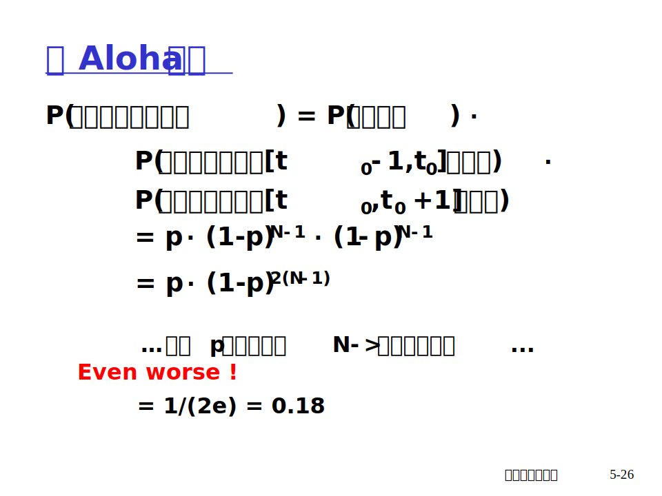
-
时隙ALOHA:
- 假设所有帧大小相同
- 时间被划分为相同大小的时隙，一个时隙等于传送一帧的时间
- 节点需要同步
- 需要节点有检测冲突能力
具体实现:
- 当节点要发送新帧，它等到下一时隙开始时传送
- 没有冲突，节点可以在下一时隙发送新帧
- 如果有冲突，节点在随后的时隙以概率p重传该帧，直到成功为止。
与ALOHA不同，时隙ALOHA会在发送前检测信道是否有冲突，如果无才发送，有则延迟发送来降低冲突发生的概率。但相对ALOHA来说时隙ALOHA对时隙的浪费更为严重，却优于信道划分中的时分。
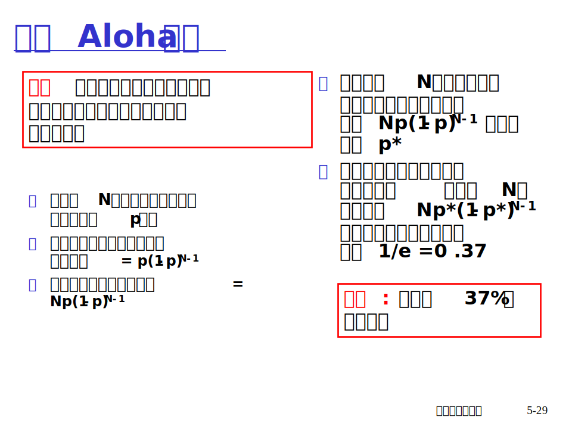
-
CSMA->CSMA/CD: Carrier Sense Multiple Access(载波侦听多路访问)协议。
- CSMA: 在发送前侦听，如果信道闲：传送整个帧，如果信道忙：延迟传送。但冲突还是可能发生: 传播延迟可能导致两个节点没侦听到其它节点的传送。
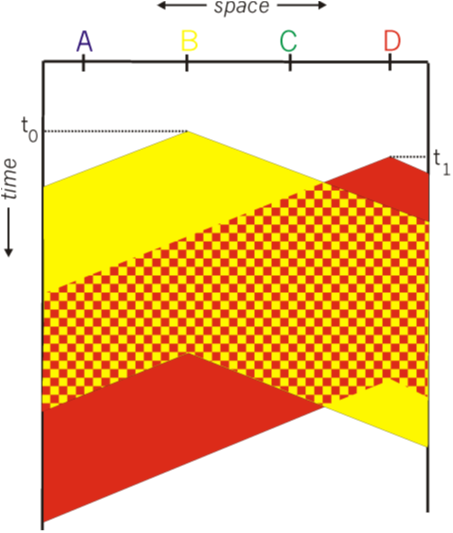 - CSMA/CD:
- 当一个节点要发送数据时，首先监听信道，看是否有载波。
- 如果信道空闲，则发送数据；如果信道忙，则继续对信道进行监听。一旦发现空闲，便立即发送。
- 如果在发送过程中未检测到碰撞，则传输成功；否则停止正常发送，转而发送一短暂的干扰信号jam，强化冲突，使其它站点都能知道出现了冲突。
- 发送了干扰信号后，指数退避一随机时间,即假设该帧经过n次冲突后，适配器在{0,1,2,…,}中随机选取一个K值，其中m=min(n,10),然后等待K*512比特时间后,回到第2步。(512bits是因为以太网的最小帧长度为64bytes)
jam拥塞信号: 48比特，确保所有传送者知道冲突发生。 指数回退: 在{0,1,2,…,}中随机选取一个K值来计算回退时间 比特时间: 对于10 Mbps Ethernet为0.1微秒，当K=1023，回退时间大约50毫秒。
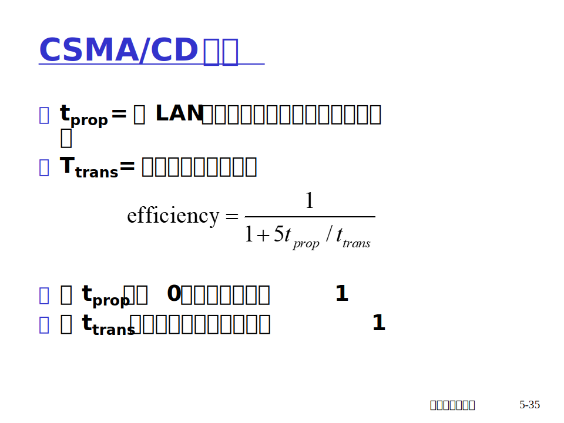 - CSMA: 在发送前侦听，如果信道闲：传送整个帧，如果信道忙：延迟传送。但冲突还是可能发生: 传播延迟可能导致两个节点没侦听到其它节点的传送。
-
-
轮转:
信道划分在低负载情况下只能利用少数信道，对信道的浪费很多但高负载下信道公平分配。随机访问在高负载情况下冲突开销大但低负载利用率高。轮转协议是信道划分和随机访问的折中方案。
轮转的两种实现方案:- 轮询: 主节点轮流 “邀请”从属节点传送数据。但是有一定的缺点: 轮询开销、延迟、主节点失效，整个网络失效。
- 令牌传递: 控制令牌从一个节点顺序传到下一个节点。但也存在令牌的开销、延时和令牌失效的问题。
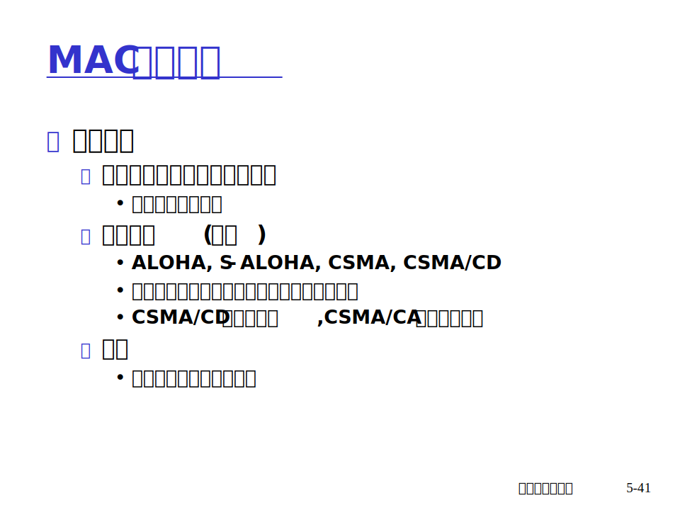
Switched Local Area Networks(交换局域网)
多址访问协议广泛应用于局域网。基于随机访问的CSMA/CD广泛应用于局域网。基于令牌传递技术的令牌环和FDDI在局域网技术中变得次要。链路层技术的发展，局域网、城域网、广域网的概念变得越来越模糊和不重要。
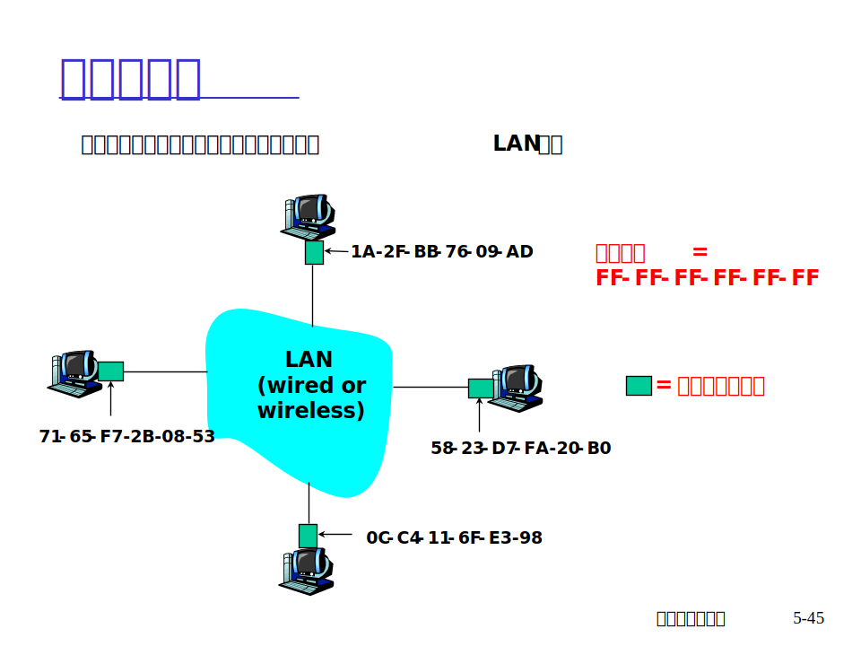
Link Layer Addressing and ARP(链路层编址和地址解析协议)
Link Layer Addressing
网络层使用32位IP地址来表示一个接口。而链路层使用48位的MAC地址来表示一个接口。MAC地址由IEEE统一分配，厂商需要购买一块MAC地址空间用来给每台设备分配一个MAC地址。
但是网络层传送下来的为IP地址，无法得到目的节点的MAC地址。因此便提出了ARP协议来从IP地址转换到MAC地址从而进行链路层转发。
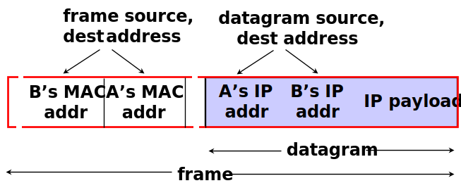
Address Resolution Protocol
每个在局域网上的IP节点(Host, Router)都有ARP表，其中ARP表中有着局域网上一些节点的IP/MAC地址映射关系，通过ARP表即可实现从IP地址到MAC地址的转换。
ARP表结构: < IP address; MAC address; TTL>
TTL(Time To Live): 映射地址的失效时间 (典型为20分钟)。
若ARP表中不存在目的IP地址与其MAC地址的映射，则当前节点会发送ARP请求，通过向FF-FF-FF-FF-FF-FF广播地址发送ARP查询，在局域网上的所有机器都能收到ARP查询。当收到需要查询的IP地址为自己时，该节点会将自己的MAC地址通过包单播(unicast)的方式发送给ARP查询的节点。于是查询节点更新自己的ARP表。
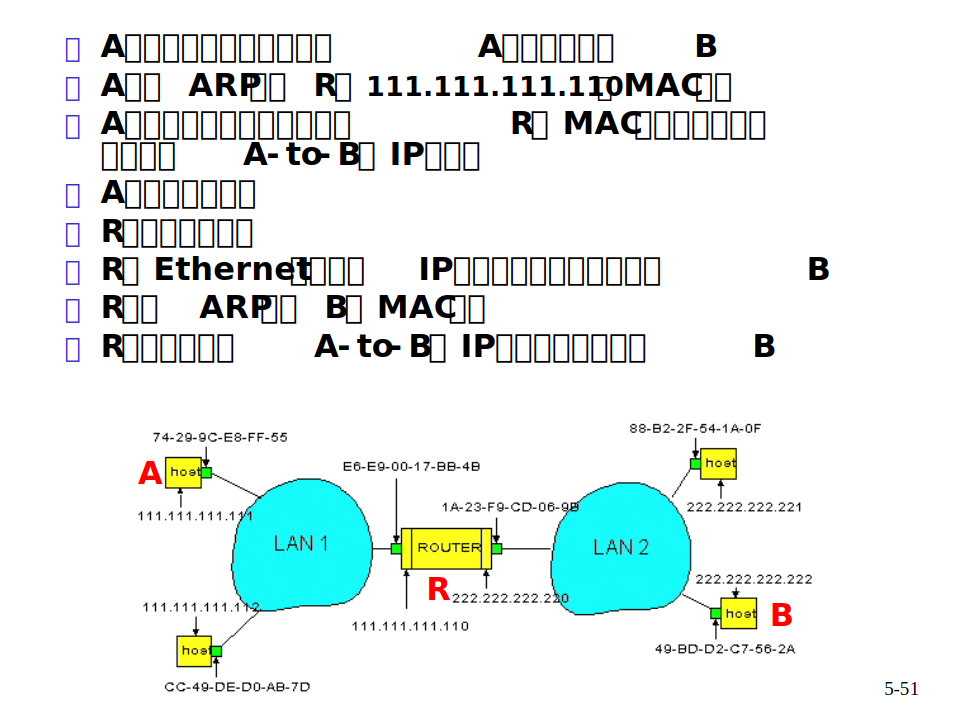
Ethernet(以太网)
以太网是主流的LAN技术，具有价格便宜、高速率的优点。
Ethernet Frame
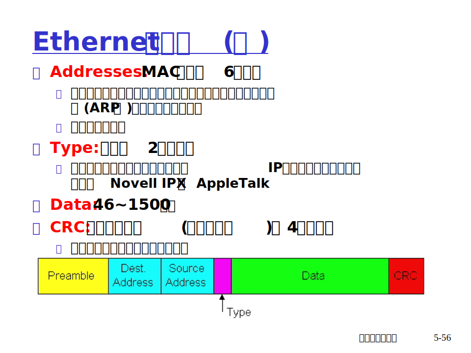
- Preamble: 是后续加的结构，这里不做说明，计算时也不参加。
- 目的MAC地址和源MAC地址: 是以太网帧的主要内容，每个地址都是48bits(6bytes)，用来查找传输接口。
- Type: 指明上层协议的类型，如IP协议等。
- Data: 注意: Data区最小为46字节，哪怕只有1字节的数据需要传输也需要将其补全为46字节，因此以太网的最小帧为64bytes(6 + 6 + 2 + 46 + 4) = 64
- CRC: 存放冗余校验码。
以太网不提供可靠的数据传输服务，因为它是无连接不确认的一种协议。
- 无连接：发送和接收适配器间不握手。
- 不可靠：接收适配器不向发送适配器发送确认帧，因此没有确保数据完整传输和按序到达的服务。
以太网使用CSMA/CD来进行发送数据，因此没有时隙，会在发送前监听冲突和在发生冲突后发出警告，监听到冲突后也会有一个避让冲突的重传机制。
hub(集线器)
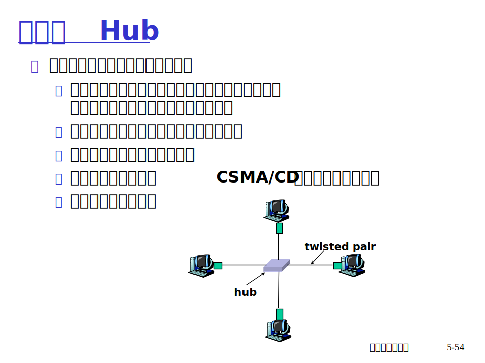
集线器本质为物理层中继器，只有将bit信号整形放大和转换功能，没有其他更多的特性和功能。
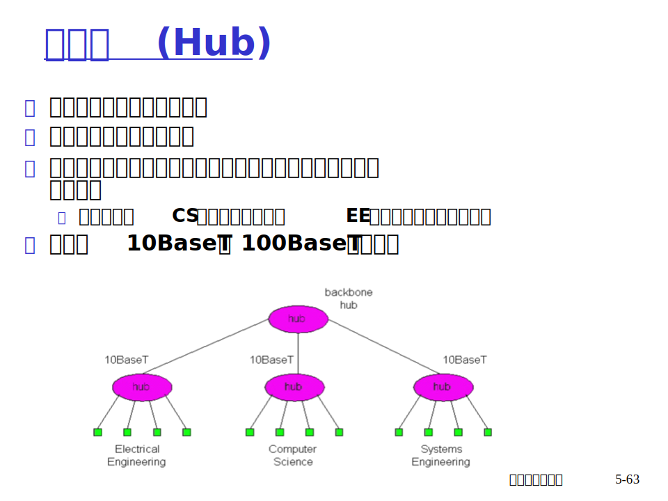
使用hub的网段仍然处于同一个冲突域内。
switch(交换机)
交换机的本质是多口网桥，可以将多个网络接口连接在一起，从而实现多个网络接口之间的互联。在收到以太网帧后会检查帧头,并根据目的MAC地址有选择的转发帧。当MAC帧被转发到某一共享网段时,交换机会使用CSMA/CD访问该网段。
交换机有自学习功能，会根据过往记录来自己生成和更新交换表从而知道转发方式。当目的地址不在交换表中时，交换机会将帧发给所有连接的接口(除收到该帧的接口外)。
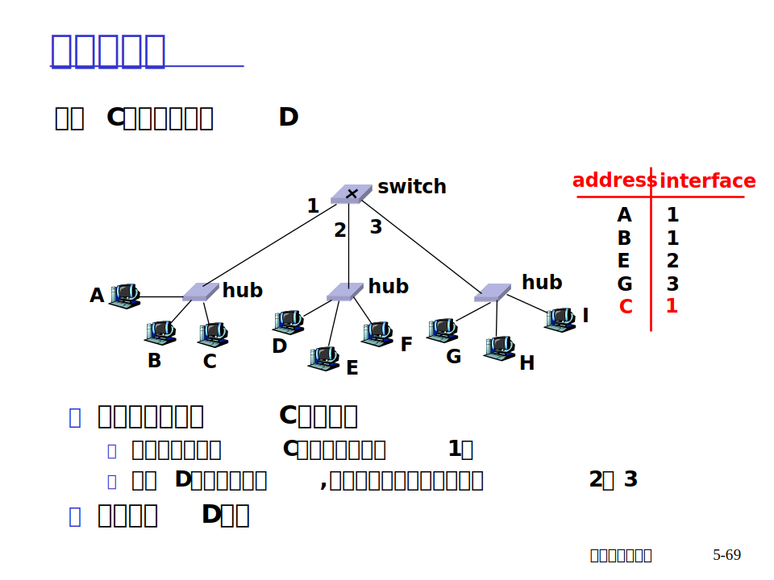
通过交换机把子网划分为多个LAN网段后，每个LAN网段都变成一个独立的冲突域。因此在内部可以同时交换，不会发生冲突。
Review
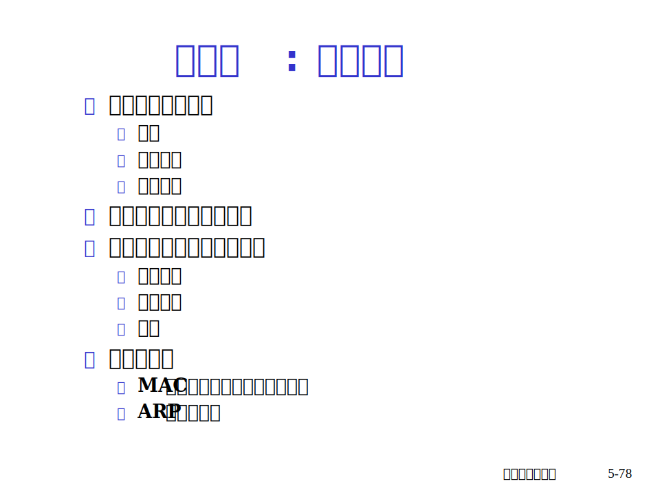
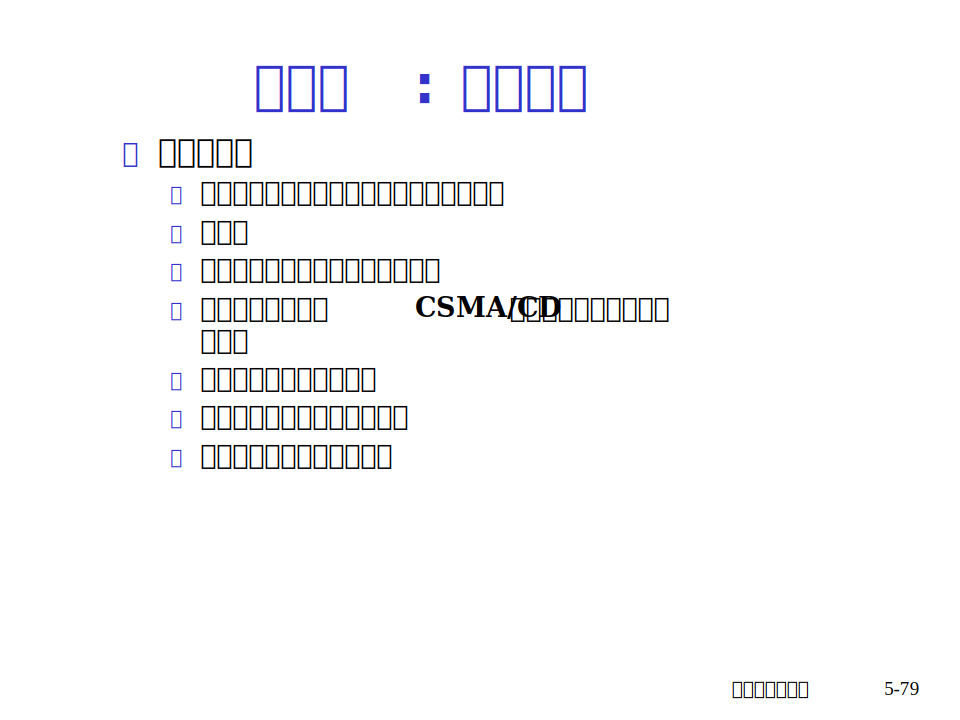
本博客所有文章除特别声明外，均采用 CC BY-SA 4.0 协议 ，转载请注明出处！